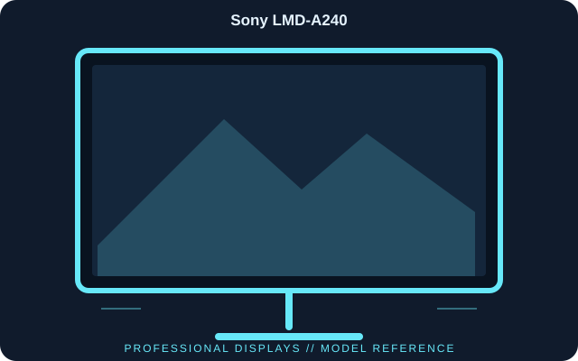

[ INDIVIDUAL COMPONENT // DISPLAYS ]
Sony LMD-A240
A 24-inch 16:10 professional LCD monitor in Sony’s LMD-A series, designed for broadcast and production monitoring with SDI and HDMI inputs.

IDENTIFICATION: Sony LMD-A240; LMD-A series. Verify the full model code, region and hardware revision on the unit label. Published specifications describe the identified configuration; its matching manual and label take precedence if revisions differ.
Published specifications
| Catalog subcategory | Professional Displays |
|---|---|
| Exact model | Sony LMD-A240 |
| Panel / native resolution | 24-inch IPS LCD, 1920 × 1200 (16:10) |
| Typical luminance / contrast | 200 cd/m² / 1000:1 |
| Viewing angle | 89° in all directions (manufacturer stated) |
| Video inputs | 3G/HD/SD-SDI × 2, HDMI and composite |
| Video outputs | SDI loop-through and composite output |
| Power / dimensions | Approximately 77 W; 566.9 × 375.6 × 153.7 mm with stand |
| Weight | Approximately 8.1 kg |
Compatibility & connectivity notes
SDI connections are intended for professional baseband video and support format-dependent signal standards; confirm the incoming raster, frame rate and SDI level before use. HDMI is available for compatible sources. This is a monitor, not a format converter or reference measurement instrument; installed optional input boards and regional variants should be checked on the unit.
Preservation notes
Record the complete model suffix, serial/date code, input selection, source device, cable or adapter, tested timing and observed condition. Retain the matching regional manual and any calibration or service records with the display. Follow the manufacturer’s cleaning and service instructions; do not open CRT equipment without appropriate high-voltage training.
Manufacturer documentation & authoritative sources
- Sony Professional — LMD-A240 product overview and specificationsManufacturer documentation and model-specific reference.
- Sony Professional — LMD-A240 operating instructions and downloadsManufacturer documentation and model-specific reference.